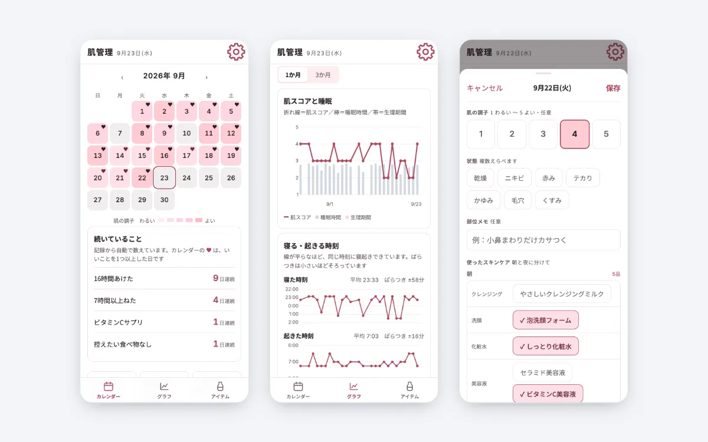
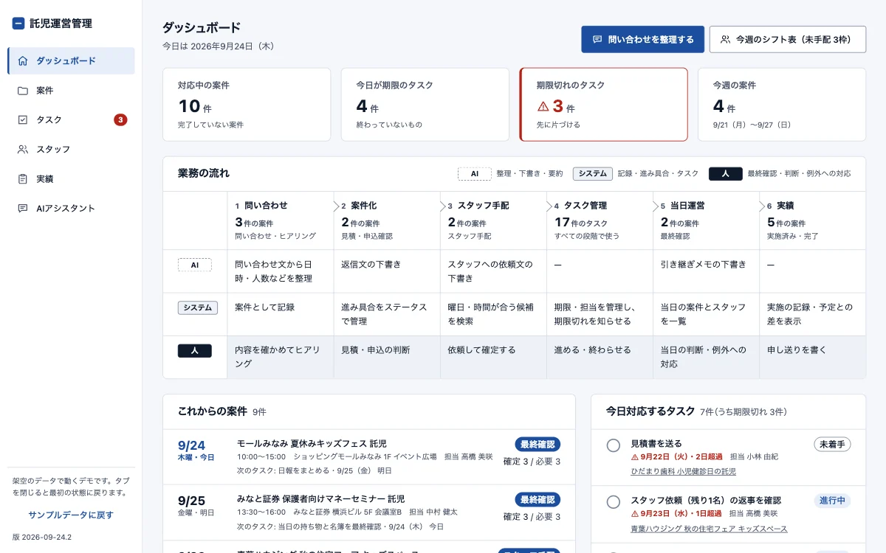

WEB APP肌の記録と振り返りアプリ
肌の調子・スキンケア・睡眠・食事を毎日記録し、どんな日に肌の調子がよかったかをグラフで振り返れるWebアプリです。自分用に企画から開発まで行いました。画面は架空のデータで表示しています。
- 使用技術
- HTML・CSS・JavaScript／Google Drive 連携（記録の引き継ぎ）
- 担当
- 企画・設計・開発・テスト
- 納品物
- Webアプリ一式・使い方の手順書（設計書・動作確認の記録つき）

WEB APP肌の調子・スキンケア・睡眠・食事を毎日記録し、どんな日に肌の調子がよかったかをグラフで振り返れるWebアプリです。自分用に企画から開発まで行いました。画面は架空のデータで表示しています。
 WEB APP
WEB APPパーソナルカラー・骨格・顔タイプの診断結果を、毎日の服とメイク選びに使うためのWebアプリです。写真を撮って AI に聞くと、似合うかどうかと合わせ方がわかります。自分用に企画から開発まで行いました。画面は架空のデータで表示しています。

WEB APP問い合わせ・申込・スタッフの手配・常設託児室のシフト・実績・請求の準備までを、1つの流れで管理する業務Webアプリです。AIは整理と下書き、最終確認と判断は人が行う役割分担にしています。ポートフォリオ用の架空の案件で、画面は架空のデータで表示しています。